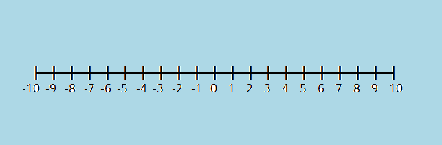

When a number in real life it is called Direct Numbers they can be used to represent the tempreture and can be used to represent negative and possitive numbers.
lets take a this; a profit of $100
Because it is a profit it would be +100
a drop of 10 marks
it would be -10 because it is a loss
In mathamatics, direct numbers are also known as integerd. You can represent the set of integers on a number line like This
